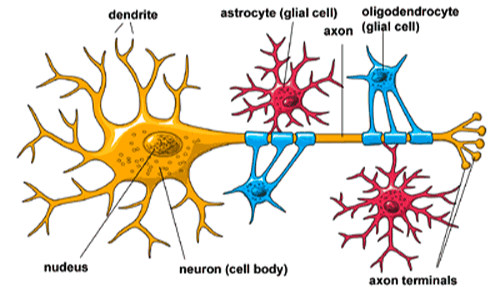

Introduzione
L’applicazione di strumenti di Artificial Intelligence (AI), come visto nell’articolo precedente, sta portando una ventata di aria fresca nel campo della medicina, in particolare si nota una spinta significativa verso quella che viene chiamata medicina personalizzata, ovvero tutte quelle attività di prevenzione, diagnosi e trattamento delle patologie che passano dall’essere generale al tipo di patologia (quindi adatti a tutti i pazienti), all’essere specifiche alla genomica (DNA) del paziente.
Nello specifico in questo articolo discuteremo a livello macroscopico della gestione personalizzata dei tumori cerebrali fornendo nel modo più semplice definizioni e concetti per comprendere la tematica (anche perché non sono un medico e devo capire anche io cosa scrivo lol), per poi analizzare nel dettaglio gli strumenti e lo stato dell’arte di quest’ambito nel prossimo articolo.
Raggiungere un'equilibro onco-funzionale
Modelli basati sull’AI hanno il potenziale di impattare positivamente nelle differenti fasi del processo diagnostico e terapeutico, anche se con la marea di studi usciti hanno confermato di esserne in grado.
Questi modelli sono da affiancare al classico esame istologico, ovvero lo studio al microscopio dei tessuti prelevati dal paziente al fine di terminare la natura della malattia o lesione, utilizzando quello che viene chiamato approccio radiomico, ovvero la combinazione tra analisi quantitativa delle immagini radiologiche quali TAC e MRI e modelli AI-based al fine di scovare informazioni non visibili a occhio nudo. Questo approccio ‘futuristico’ permetterà una caratterizzazione complementare, ripetibile e non invasiva al paziente della malattia/lesione cosi da poter assistere oncologi e neurochirurghi nella scelta delle migliori terapie per il paziente e riuscire ad avere un bersaglio specifico per la chemioterapia in modo da portare il minimo danno al paziente. La combinazione dell’approccio istologico con l’approccio radiomico sta portando ad un cambiamento del paradigma di gestione dei tumori al cervello, mirando al raggiungimento del cosiddetto equilibro onco-funzionale del paziente, ovvero l’equilibro tra il trattamento ottimale del tumore per aumentare le aspettative di vita del paziente e la preservazione delle funzioni cerebrali essenziali per mantenere una qualità di vita dignitosa.
Questo è l’obiettivo da raggiungere nei prossimi anni per aumentare la qualità medica e lo strumento per raggiungere questo obiettivo è l’AI (o almeno questo è il mio pensiero)
l’AI nella neuroradiologia
Nonostante io vi stia parlando dell’AI come se fosse uno strumento cruciale e pieno di potenzialità, la realtà dei fatti è che questi strumenti sono molto distanti dall’essere utilizzati nella quotidianità dei radiologi e neuroradiologi nel loro work-flow. Lo scoglio maggiore in questo campo non è lo sviluppo dei modelli intelligenti, ma il riuscire a inserirli a livello globale nella vita dei medici.
La situazione la reputo paradossale, perché nonostante gli siano studi clinici in cui viene utilizzato un approccio radiomico e radigenomico, ossia l’approccio radiomico viene correlato alla biologia (correlazione tra genotipo e fenotipo), in neuroradiologia stia crescendo giorno per giorno, mostrando delle evidenze chiare, esso sembra essere discriminato (forse per la paura del futuro idk).
In particolare gli ambiti neuroradiologi in cui si ottengono i maggiori risultati sono: la detection di lesioni, la diagnosi differenziale, la caratterizzazione molecolare non invasiva, la definizione dei margini della lesione e delle sue relazioni spaziali (segmentazione) e la valutazione della risposta alla terapia e alla prognosi. La speranza è quella che ognuna di queste aree (come altre per casi e patologie diverse) vengano invase dall’utilizzo dell’AI e dall’approccio radiomico, assistendo i radiologi nella quotidianità, per ottenere una qualità dell’intero processo superiore e (magari) salvando il maggior numero di vite possibile.
Focus sui gliomi
Il glioma è la tipologia di tumore del sistema nervoso centrale (CNS) più comune. Essi derivano dalle cellule gliali, cellule che insieme ai neuroni costituiscono il sistema nervoso e hanno la funzione di nutrire e sostenere i neuroni, assicurando la protezione dei tessuti nervosi in caso di lesioni.
 Interazione delle cellule gliali con i neruroni.Il glioma è una malattia clinicamente e biologicamente etereogenea, con diversi istotipi (classi istologiche di un tumore) e sotto-tipi molecolari riconosciuti, con storie cliniche che variano da una crescita lenta e prognosi benigna e una crescita molto rapida con una prognosi sfavorevole. Per questa sua caratteristica è fondamentale una diagnosi tempestiva e accurata per assicurare il miglior trattamento per il paziente e una sopravvivenza maggiore.
Che ruolo ricopre l'AI in questo caso?
Storicamente la classificazione di questi tumori si è basata solo ed esclusivamente sulle caratteristiche istopatologiche (derivanti dall’esame istologico), tuttavia nelle classificazioni più recenti si stanno inserendo anche informazioni genetiche ed epigenetiche (cambiamenti ereditbili tramite modifiche del genotipo, ovvero il DNA). Tra le più importanti in questa categoria troviamo: i marcatori molecolari (qualsiasi cosa che ci distingue da un altro individuo) e i profili di metilazione del DNA, senza entrare nello specifico sono da vedere come ‘interuttori’ che accendono e spengono i geni, senza cambiare il codice genetico (importanti perché permettono di capire il comportamento delle cellule).
Il profilo genetico ed epigenetico definisce la firma molecolare del tumore, una sorta di codice a barre che identifica univocamente il tumore, la cui identificazione è cruciale per le decisioni terapeutiche (ciò avviene tramite biopsia) nel campo delle terapie personalizzate e mirate.
Sempre più evidenze dimostrano come l’AI abbia una capacità e un potenziale incredibile all’interno dell’imaging oncologico, tanto da riuscire ad estrarre la firma di imaging. Al pari della firma molecolare, la firma di imaging offre informazioni univoche, complementari e aggiuntive per la caratterizzazione del tumore, ricoprendo un ruolo fondamentale nella diagnostica di precisione senza essere invasiva per il paziente, aprendo nuovi campi nel mondo della medicina personalizzata.
Conclusioni
La conclusione di questo trattato che potrebbe sembrare molto complesso è la seguente: gli strumenti basati sull’AI rappresentano il ponte tra diagnostica di precisione e la terapia di precisione, portando a un possibile futuro in cui la medicina sarà ad hoc per ciascuno di noi.